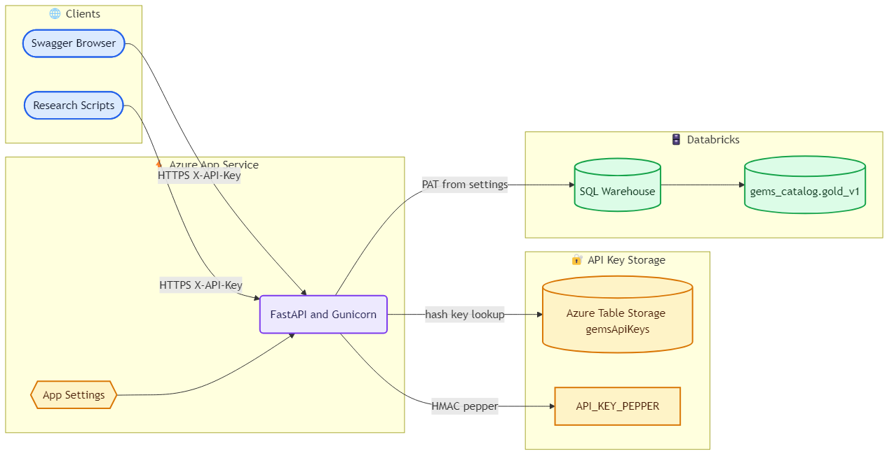
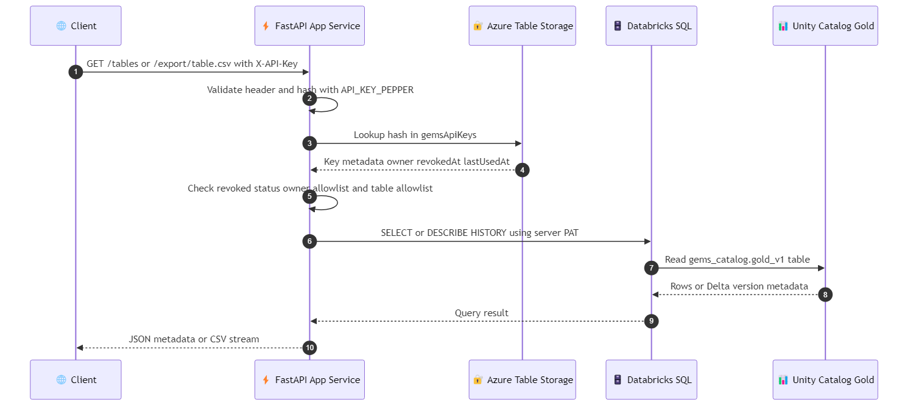
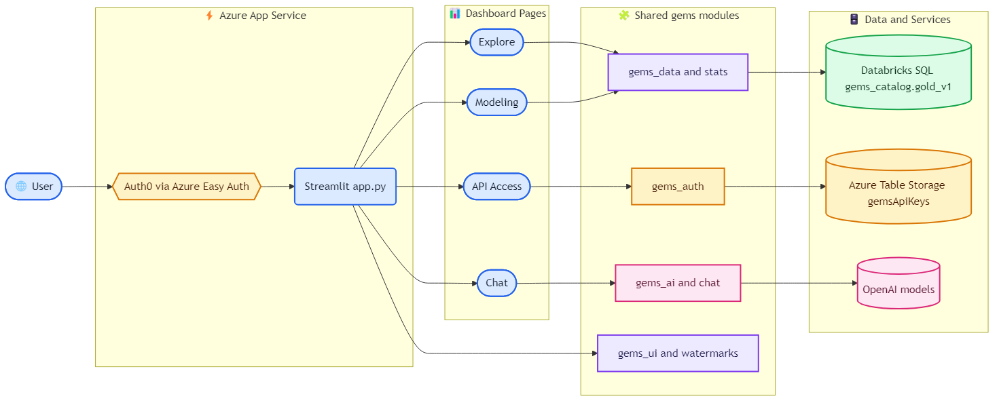
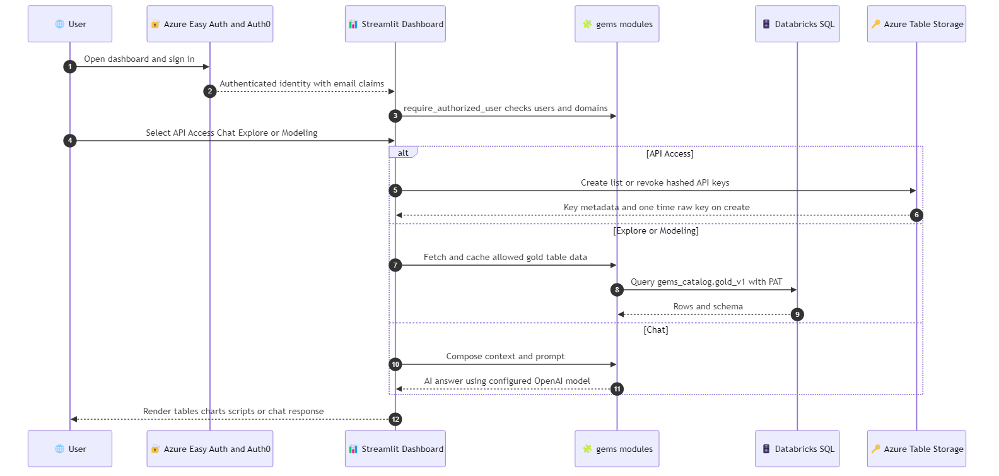
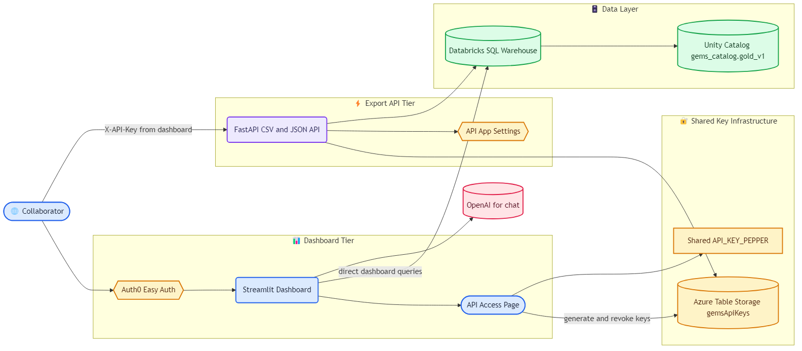
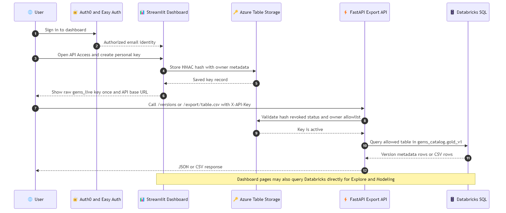

FastAPI Architecture
FastAPI on Azure App Service validates table-backed API keys, then queries Databricks gold tables.
Open HTMLSix polished Mermaid diagrams for the FastAPI service, Streamlit dashboard, and combined end to end request flow.

FastAPI on Azure App Service validates table-backed API keys, then queries Databricks gold tables.
Open HTML
Client request validation, HMAC lookup, allowlist checks, Databricks query, and JSON or CSV response.
Open HTML
Streamlit pages, shared gems modules, Easy Auth, Databricks, Azure Tables, and OpenAI.
Open HTML
User login through page selection, authorization, key management, data fetch, and rendering.
Open HTML
Dashboard and API tiers share key storage and Databricks while supporting direct dashboard queries.
Open HTML
User creates a key in the dashboard and uses it against the API to retrieve Databricks data.
Open HTML